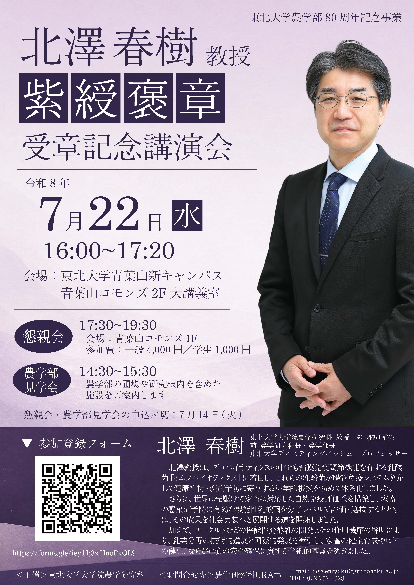

令和8年春の褒章において、農学研究科の北澤春樹教授が紫綬褒章を受章されました。
これを記念し、受章記念講演会を下記のとおり開催いたします。
記念講演会後は懇親会も開催する予定ですので、ぜひご参加をご検討ください。
開催概要
- 日時
-
令和8年7月22日（水）
16:00～17:20 - 会場
-
青葉山コモンズ 2階 大講義室
地図
東北大学青葉山新キャンパス - 関連行事
-
-
農学部見学会（主に学外者対象）
時間：14:30～15:30
農学部の圃場や研究棟内を含めた施設をご案内します -
懇親会
時間：17:30～19:30
会場：青葉山コモンズ 1階 ラーニングコモンズ
参加費：一般 4,000円 ／ 学生 1,000円
-
農学部見学会（主に学外者対象）
ポスター

画像をクリックするとPDFが開きます
参加申し込み
記念講演会・農学部見学会・懇親会へのご参加は、下記フォームよりお申し込みください。
関連情報
農学部への寄付・ご支援
東北大学基金を通じた農学部の研究・教育活動へのご支援はこちらからお願いいたします。